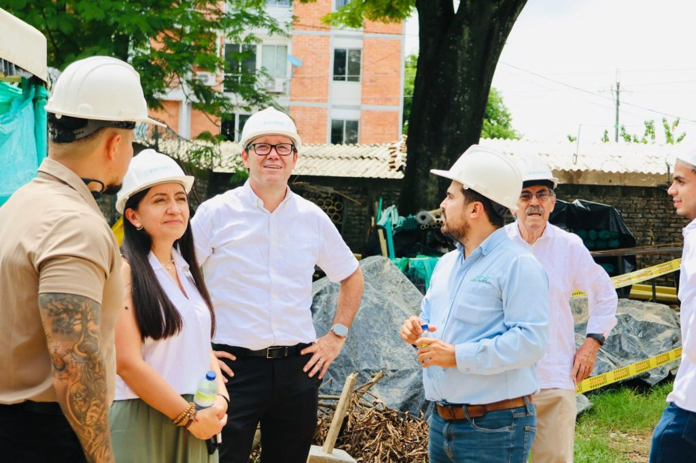

El miércoles 21 de octubre de 2026, el Consejo Directivo de la Institución Universitaria Tecnológica de Santander (UTS) aceptó, con ocho votos de nueve posibles, la renuncia de Omar Lengerke Pérez a la rectoría. La decisión se tomó en una sesión realizada en el campus de Barrancabermeja, el mismo que él había entregado ampliado apenas dos meses antes. Con esto termina una gestión que empezó en marzo de 2015 y que se extendió casi doce años, uno de los periodos más largos al frente de la institución en su historia reciente.
La salida no ocurre en el vacío. Días antes, el gobernador de Santander, Juvenal Díaz Mateus, cuestionó públicamente el proceso para elegir al rector que gobernará la UTS entre 2027 y 2030, y lo calificó de "viciado". Lengerke respondió que esa decisión le corresponde al Consejo Directivo y que el proceso se ha adelantado conforme a las normas de la institución, pero también dejó una frase que resume el tono de su salida: si el problema era él, estaba dispuesto a retirarse.
«Si el problema soy yo, me retiro.»
Omar Lengerke Pérez, sobre la disputa por la elección del próximo rector de la UTS
Por ahora, la rectoría quedó en manos de Alberto Serrano, como encargado. El proceso para elegir al rector del siguiente periodo sigue su curso: catorce personas se inscribieron como aspirantes, y el Consejo Directivo tiene previsto tomar la decisión final a mediados de diciembre de 2026.
¿Qué deja esta gestión? En casi doce años, la matrícula de la UTS pasó de 21.612 a 30.689 estudiantes, la oferta académica creció de 30 a 64 programas, y la institución obtuvo la Acreditación Institucional en Alta Calidad para su campus de Bucaramanga —la primera vez que una entidad de carácter tecnológico, y no universitario, logra ese reconocimiento en Colombia—. Este año, además, el Ministerio de Educación aprobó el cambio de carácter académico que la convirtió en la Institución Universitaria Tecnológica de Santander, y en agosto se entregó el nuevo edificio del campus de Barrancabermeja, construido con una inversión de $22.813 millones entre Ecopetrol, la Gobernación, la Alcaldía de Barrancabermeja y la propia UTS.

Varios medios regionales han señalado, como un rumor que circula en Santander y no como un hecho confirmado, que la renuncia podría estar relacionada con una eventual aspiración de Lengerke a la Gobernación de Santander en las elecciones regionales de octubre de 2027. Hasta la fecha de esta publicación, Lengerke no ha confirmado públicamente ninguna candidatura. Lo que sí es un hecho es que su salida de la UTS coincide con el inicio del movimiento político que empieza a tomar forma en el departamento de cara a esas elecciones.
Este sitio se irá actualizando a medida que haya información oficial y verificable sobre los próximos pasos de Omar Lengerke.